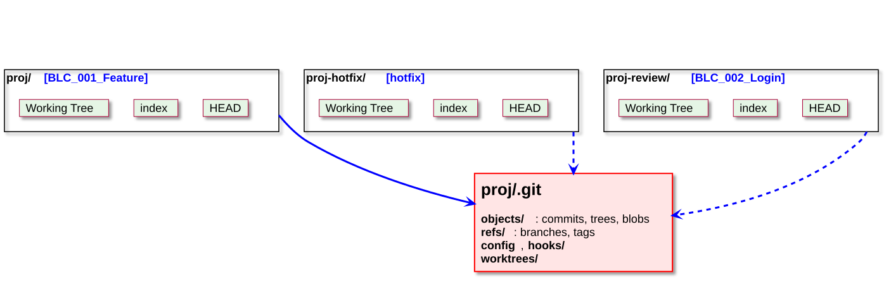

Chapitre 11
Git : sous le capot et travail en parallèle
11.1 Vue d'ensemble
11.2 Le répertoire
11.3 Worktrees
Exercice
11.1 Vue d'ensemble

11.2 Répertoire .git
- hooks
- info
- logs
- objects
- refs
- worktrees
- COMMIT_EDITMSG
- config
- description
- FETCH_HEAD
- HEAD
- index
- ORIG_HEAD
- packed-refs
💻 11.2 Répertoire objects
Git stocke le contenu des fichiers sous forme de paires
À partir du
git cat-file -p <hash>
11.2 3 types d'objects
- Contenu, taille, type (pas de noms de fichiers)
- L'arborescence, avec les noms de fichiers
Tree racine,commit parent, info auteur, timestamp
💻 11.2 3 types d'objects
git cat-file -t <hash>
git cat-file -p main^{tree}
# ou
git cat-file -p 'main^{tree}'
11.2 Remarques
Le
➔ 2 fichiers identiques, mais dans 2 commits différents pointent sur le même
11.3 Worktrees : le problème
Vous êtes au milieu d'une feature, avec des modifications non commitées…
| Solution | Inconvénient |
| Commit « WIP » puis | Un commit à nettoyer ensuite |
| Facile d'oublier ce qui est stashé | |
| Un deuxième | Tout re-télécharger, deux dépôts à synchroniser |
Avec un commit WIP ou un stash, le dossier de build (CMake) recompile à chaque changement de branche.
11.3 Worktrees : le principe
Un seul dépôt

11.3 Créer un worktree
Avec une nouvelle branche
git worktree add ../proj-hotfix -b hotfix main
Crée le dossier
Avec une branche existante
git worktree add ../proj-review BLC_002_Login
Par exemple pour relire la merge request d'un collègue sans toucher à son propre travail.
11.3 Lister et supprimer
> git worktree list
D:/dev/proj 7c37a40 [BLC_001_Feature]
D:/dev/proj-hotfix 4681cfb [hotfix]
D:/dev/proj-review 1358c5c [BLC_002_Login]
> git worktree remove ../proj-hotfix
> git branch --delete hotfix
Dossier effacé à la main ?
11.3 Une branche = un seul worktree
> git worktree add ../proj-feature BLC_001_Feature
fatal: 'BLC_001_Feature' is already used by worktree at 'D:/dev/proj'
Git interdit d'avoir la même branche ouverte dans deux worktrees :
- un commit dans l'un déplacerait la branche sous les pieds de l'autre.
Besoin juste de regarder une version ?
11.3 Partagé ou propre à chaque worktree ?
| Partagé (un seul exemplaire) | Propre à chaque worktree |
| Working Tree (les fichiers) | |
| Fichiers non suivis ( |
Un commit fait dans un worktree est immédiatement visible depuis les autres (
11.3 Worktrees sous le capot
Dans un worktree,
> cat ../proj-hotfix/.git
gitdir: D:/dev/proj/.git/worktrees/proj-hotfix
Le dépôt principal garde l'état propre à chaque worktree :
proj/.git/worktrees/proj-hotfix/
HEAD ← ref: refs/heads/hotfix
index
gitdir ← D:/dev/proj-hotfix/.git
commondir ← ../.. (objects, refs partagés)
11.3 Cas d'usage
Hotfix : corrigermain sans toucher à la feature en coursRevue : compiler et tester la branche d'un collègue à côté de la sienneBuild long : un dossierBUILD/ par worktree, pas de recompilation complète à chaque changement de branche (chapitre 7)Comparer : lancer deux versions du programme côte à côteAgents IA : plusieurs agents de code travaillent en parallèle, chacun dans son worktree, sans se marcher dessus
11.3 Bonnes pratiques
- Créer les worktrees à côté du dépôt (
../proj-hotfix ), jamais dedans - Nommer le dossier d'après la branche
- Supprimer avec
git worktree remove , pas avec l'explorateur - Faire régulièrement
git worktree list : un worktree oublié bloque sa branche - Les fichiers non suivis (
BUILD/ ,.env …) ne sontpas copiés dans le nouveau worktree
💻 Exercice
Par groupes de 2, sur votre repo GitLab :
- Créer une branche
<Dev>_<Id>_Feature , faire un commit, puis laisser une modification non commitée - Un bug urgent arrive : créer un worktree
../<repo>-hotfix avec une branchehotfix partant demain - Dans le worktree : corriger, commit, fusionner dans
main , push - Supprimer le worktree et la branche
hotfix - Revenir dans le dossier principal : la modification non commitée est toujours là. Rebaser la feature sur
main